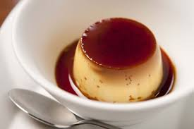

焦糖布丁
作法：
1. 將水及白砂糖放入鍋中以中火煮約2分鐘至褐色為止。(過程中勿攪拌)
2. 由高處淋熱水，等待片刻，使其化開成焦糖蜜液，再加入少許檸檬汁後將焦糖汁利馬倒入布丁模型裡。
布丁製作:
1. 將雞蛋打散後加入香草精拌勻備用。將1/3牛奶加糖煮至溶化。(勿煮到滾)
2. 將做法1和做法2混和，再把2/3的牛奶加入攪拌均勻並過濾，再裝入以加焦糖的模型中至約8分滿。
3. 將布丁放置烤盤中，烤盤加熱水約1公分高，以上下火150℃，隔水加熱方式約考45分鐘。
4. 取出冷卻後冷藏室期定型，然後脫模扣出。

Cedric Grolet
草莓蛋糕
馬卡龍
心得